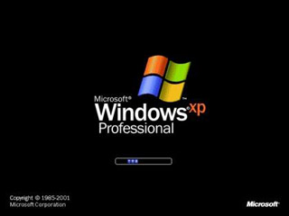

Ce tutoriel va vous expliquer comment procéder pour changer le design de Windows XP, en ajoutant de nouveaux thèmes et en personnalisant de nombreux paramètres.
Si vous souhaitez installer des thèmes non-officiels, il vous faudra "patcher" Windows XP. Rassurez-vous, cette opération est gratuite, et sans danger pour votre ordinateur. :D Histoire de vous mettre en appétit voici le Windows Xp que vous pourrez obtenir une à fois à la fin de la première partie de ce tutoriel.
Windows XP est doté d'une protection qui permet d'éviter à des thèmes non validés par Microsoft de s'installer. UXTheme Multi-Patcher permet donc de patcher Windows XP afin de supprimer cette protection.
Quelles sont les raisons d'une telle protection ?
Microsoft nous indique que cette mesure vise à protéger les utilisateurs de Windows XP. En effet, certains bugs peuvent apparaître sur des thèmes de mauvaise qualité. Il est probable que Microsoft a mis en place cette protection pour ne permettre qu'à ceux qui ont une licence Windows valide de pouvoir installer de nouveaux thèmes.
Cela s'inscrit dans la politique de Microsoft, en lutte contre le piratage de son programme intitulé "Genuine Advantage".
Mais le vrai avantage de pouvoir installer des thèmes non-officiels, c'est qu'il en existe des milliers !
Pour patcher Windows XP, il vous faudra télécharger ce logiciel :
Télécharger maintenant le logiciel UxTheme Multipatcher pour patcher Windows Xp
Puis l'installer... Son installation n'est pas très compliquée et est assez intuitive. Sauf pour un vrai Zér0 :p .
Ne vous inquiétez pas : vous êtes sur le bon site ;) .
Voici comment il faut procéder :
Il faut cliquer sur "Patch" à l'apparition de la première fenêtre.
Rassurez vous, ce n'est pas très compliqué. Le plus dur, c'est de trouver un thème à votre goût. Pour notre exemple, j'ai choisi un thème qui va peut-être vous séduire.
Télécharger le thème XPAmp 1.9
Une fois téléchargé, décompressez-le, soit avec l'utilitaire Windows ou avec votre logiciel favori tel que Winrar, ou Winzip.
Placez votre dossier contenant le fichier xpamp.msstyles et le dossier shell dans un endroit sûr, pour éviter de le supprimer par mégarde.
Pour changer l'apparence de Windows, il vous suffira de faire un double clic sur le fichier identique à celui représenté ci-dessous :
Ce fichier se trouvera dans le dossier que vous avez dû auparavant décompresser.
Puis, une fenêtre comme celle ci devrait s'afficher.
Votre meilleur ami dans l'informatique, c'est Google. Mais rassurez-vous, loin de moi l'idée de vous faire rechercher, non, non, ici tout est mâché, pré-mâché, expliqué, détaillé, décortiqué. Eh oui, les ptis Zér0s. C'est super d'être toujours un vrai Zér0 et de ne jamais rien comprendre surtout à Google ! :D :-°
Alors, pour encore vous simplifier la vie voici une liste de sites qui vous permettront de trouver des thèmes :
Il existe de nombreux logiciels permettant de modifier les curseurs, et cela automatiquement. Mais malheureusement, pour la plupart, ils sont payants. :(
En voilà une bonne question ! Lorsque vous démarrez l'ordinateur, une animation s'affiche, si, si, je vous le promets ! En deux mots, un bootscreen c'est ça :

On va donc apprendre à changer cette animation par une autre.
Pour ce faire on va utiliser un logiciel gratuit, qui se nomme BootSkin.
Une fois installé, ouvrez-le. Il apparaît sous cette forme : Agrandir Une dizaine de bootscreens sont disponibles d'origine. Mais heureusement que vous avez la possibilité d'ajouter de nombreux bootscreens.
Je vous propose donc de faire un test. Nous allons appliquer ce bootscreen :
Par défaut Windows est pourvu du logon ci-dessus. C'est ce qui s'affiche le plus souvent au démarrage de l'ordinateur, soit pour changer de session, soit pour en ouvrir une. Sachez qu'il est possible de changer de logon et de le remplacer par un autre plus à votre goût.
Commençons
Je vous propose de faire un test avec un logon qui pourra vous plaire. Le résultat sera le suivant : Agrandir Avant tout il faut vous procurer le logon ci-dessus :
Une fois ces deux fichiers téléchargés il faut installer Logon loader. Exécutez le fichier d'installation. Une fois installé le logiciel Logon loader se présente comme ceci :
Puis copiez votre logon dans le répertoire C:\WINDOWS\Resources Une fois votre que votre logon est copié, retournez dans Logon loader puis allez dans l'onglet "Browse". Sélectionnez votre logon et cliquez sur le bouton "Apply". Une fenêtre de confirmation comme celle ci-dessous apparaît.
Bravo, vous avez modifié votre logon ! :)
Où trouver des logons ?
Eh bien là justement, j'ai eu vraiment du mal à trouver des sites mettant à disposition des logons gratuitement et sans spywares ! Je n'ai trouvé qu'un seul site :
Aller sur le site : Deviantart qui contient un multitude de logons.Aller sur le site : Deviantart qui contient un multitude de logons.
Les barres d'exploration de Windows XP.
Qu'est-ce qu'une barre d'exploration Windows ?
C'est ce qui s'affiche au dessus des dossiers et fichiers dans l'explorateur Windows. Si,si, je vous assure que vous savez ce que c'est. En deux mots c'est ça :
Eh bien grosse nouvelle : sachez qu'on peut le personnaliser. Et entièrement !
Un peu de pratique :
Allez hop, au travail. On va donc apprendre à changer cette barre d'exploration par une autre. Pour ce faire, on va utiliser un logiciel gratuit, qui se nomme Styler.
Puis installez-le. Si vous avez des difficultés, cliquez toujours sur "Next" ou "Suivant" (pour les anglophobes).
Une fois installé, démarrez Styler. Allez dans l'onglet Info, et cochez "StylerTB Mode", comme ceci :
Cette opération a pour seul but de vous éviter de faire de fausses manipulations, car Styler reste bourré d'options et difficile à prendre en main. Une fois ceci effectué, cliquez sur l'onglet Toolbar (voir image ci-dessus). D'origine une seule barre d'exploration est disponible : elle peut vous convenir, mais elle s'avèrera peu pratique.
Je vous propose donc de faire un test avec une barre d'exploration, qui à mon goût, l'est davantage. Le résultat sera donc le suivant :
Une fois téléchargé, ne décompressez pas le fichier. Ouvrez le logiciel Styler, et rendez-vous dans l'onglet Toolbar, puis sélectionnez le petit dossier nommé "Styler's". Sélectionnez le fichier téléchargé ci-dessus, et effectuez un clic sur ce fichier : tout en maintenant le clic, déplacez-le dans le logiciel Styler dans le cadre qui est à droite, là où sont représentés les dossiers (dont le dossier Styler's).
Une fois ceci fait, au bout de quelques instants la barre nFxus.1 s'affiche : double-cliquez dessus. Ouvrez votre explorateur Windows en cliquant par exemple sur le Poste de travail. Vous remarquerez que cette barre d'exploration s'affiche en haut. Effectuez un clic droit sur la barre d'exploration, et décochez la zone "Barre d'adresse".
Et comment faire pour afficher seulement les trois boutons tout à fait à droite comme dans l'image ci-dessus ?
C'est assez facile. Il vous suffit, dans l'explorateur Windows, de cliquer dans la barre de tâches sur "Affichage", puis sur "Barre d'outils" et sur "personnaliser".
A nouveau, une fenêtre apparaît, là sélectionnez le bouton que vous voulez, et cliquez simplement sur le bouton "Supprimer" pour le supprimer, et "Ajouter" pour l'ajouter. Assez Logique non ? ;)
Mais où trouver d'autres barres d'outils pour Styler ?
Désormais, avec Vista vous avez des fenêtres transparentes.
Mais comment faire pour avoir la transparence des fenêtres sous Windows Xp ?
Pour cela, vous aurez besoin de Glass2k. Téléchargez-le puis double cliquez sur l'icône. Une fenêtre va apparaître à l'écran puis disparaître. Ne paniquez pas ;) , tout s'est bien déroulé. Lancez le logiciel.
Ensuite suivez les instructions écrites sur l'image :
Cliquez sur "save" en bas à gauche de la fenêtre. Automatiquement la fenêtre va retourner en bas, à droite de la barre des tâches. Les réglages sont faits, il vous reste plus qu'à appliquer la transparence aux fenêtres que vous voulez. Vous pourrez choisir les différents degrés de transparence en fonction des logiciels ! Prenons un exemple. Ouvrez internet. Faites un clic droit et, tout en maintenant ce clic appuyez sur "alt". Vous devriez voir apparaître ceci :
Ne vous préoccupez pas du clic droit, ça ne nous gênera pas. Ce qui nous intéresse, c'est la nouvelle fenêtre qui s'est ouverte. Tout en haut vous pouvez appercevoir le nom de du logiciel dont vous souhaitez changer la transparence. Ensuite vous avez les pourcentages. Si vous sélectionnez "10%", votre fenêtre sera presque entièrement transparente. A l'inverse, si vous sélectionnez 90%, la fenêtre ne sera que presque pas transparente. Enfin si vous voulez enlever la transparence, cliquez sur le bouton intitulé "No Glass-effect".
Ce tutoriel est maintenant terminé. J'espère avoir été le plus clair et le plus compréhensible possible.

{kind=link}
{kind=link}
{kind=link}
{kind=link}
{kind=link}
{kind=link}
{kind=link}
{kind=link}
{kind=link}